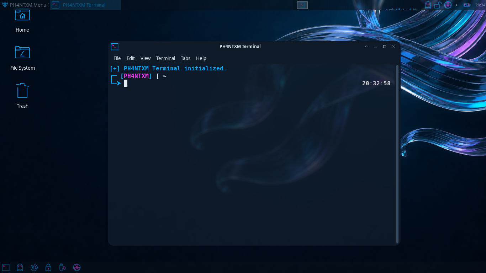

MODE / 01
LINUX
Linux-aligned identity for the system, browser, and network.
- Linux hardware and identity profile
- Encrypted domain name requests
- Protected traffic before it leaves
PH4NTXM is a Linux Live Operating System with an embedded Adaptive Identity Engine. Every boot creates a new, disposable session based on your selected mode.
The engine builds one linked identity from a new random seed. Computer name, MAC addresses and reported processor, memory, graphics and screen details follow that identity. Browser and network settings use the same session values and selected mode to keep the profile consistent.
Before the desktop opens, choose a password for administrator actions and screen unlock. You can also set a separate emergency password to trigger Panic/Nuke at screen unlock.
The session is used once and is never saved for reuse. At shutdown, Nuke blocks networking and closes the live user’s programs. The running system first scrubs available RAM. A separate Nuke kernel then runs memory-test patterns, followed by a second scrub of available RAM before powering off.
Explore a protection layer above.
A Linux-aligned identity with Firefox ESR and protected direct connections.
Shared session values link supported hardware reports with the browser and network profile. Memory, time, and readiness checks operate alongside that identity throughout the live session.
Selected at boot and fixed for the session.
Session identity and device details.
System, graphics, memory, and screen profile.
Network identity, packet transformation, and routing.
Browser, time, system checks, and shutdown.
Boot → Identity → Enforcement → Operation → Nuke → Termination
CHAIN LOCKEDFollow the path from USB boot to shutdown. Choose a mode, explore the workspace and see how the system fits together.
Start the preview, then move through the stages or revisit any part of the session.
You choose LINUX, WINDOWS, or LONE WOLF from the boot menu. The selected mode stays fixed until the session ends.
Linux-aligned identity for the system, browser, and network.
Windows-aligned identity built from the same linked session values.
Independent Linux-aligned identity with Tor Browser and Tor routing for supported TCP connections.
Check your session, browse or open files in isolation, export encrypted vaults, review devices or connections, and set optional emergency triggers. All tools are available in both editions and every boot mode.
Start in RAM, establish the session identity, then check readiness.
The live system loads into RAM. Once loading is complete, you can remove the boot USB and keep working. The next boot starts a new session.
System identity, supported hardware reports, browser settings, and network behavior share a linked profile. Newly connected network adapters receive a protected identity before use.
Supported system tools report processor, memory, and device details from the session profile. Familiar commands keep their normal output and options.
Linux and Windows combine packet transformation, firewall protection, and checks at the network exit to prevent traffic from bypassing protection.
Linux and Windows encrypt domain name requests. Lone Wolf sends them only through Tor.
Memory noise, time changes, and generated system values exist only for the active live session.
Set your own password before the desktop opens. Use it for administrator actions and to unlock the screen. Each new boot asks you to set one again.
Boot Pilot checks readiness, connects to Wi-Fi, and opens your browser. Health adds detailed reports and an on-demand Browser Check for Firefox or Tor Browser.
Browse, inspect files in isolation and export the results you choose.
Linux and Windows use Firefox ESR with the session profile. Lone Wolf uses an isolated Tor Browser connected through system Tor.
Open Firefox or Tor Browser in an isolated workspace. Import selected files, keep downloads in private RAM, and export chosen results after stopping the browser.
Convert supported documents and images into an image-only PDF inside an offline disposable virtual machine. Unlock supported encrypted documents there, then review the pages before export.
Inspect ZIP, RAR, 7z, and TAR archives in an offline disposable virtual machine. Open selected files through isolated viewers, with password prompts for encrypted ZIP entries.
View local images and play audio or video in isolated viewers without network access. Files open read-only, and temporary viewer data is removed when you close them.
Keep selected files in private RAM and export an encrypted .ph4vault copy with a separate password. Unlock it manually in a later session, without saving the operating system session.
Review activity, enable optional guards and control network access.
Check generated identity consistency and protection readiness every 10 seconds. Review detected failures and monitored MAC changes. You choose whether to enable Lockdown.
Shared GTK tools inspect networks, the kernel, processes, and radios. ConnWatch tracks incoming TCP attempts. Shredder handles selected files, with confirmation before deletion.
Preserve existing USB connections and block new or reconnected devices pending approval. Enable protection when needed. Each approval requires your session password.
Require approval for each live-user process execution before outbound IP access. Approved traffic still follows your mode’s firewall, packet transformation or Tor path.
Automatically clear copied content after a chosen timeout, with optional coverage for middle-click selections. Each new copy starts a fresh timer. No clipboard history is kept.
Cut network access while keeping the live session open. Your applications and local work remain available.
Prepare optional emergency triggers and end the session through Panic/Nuke.
Set an optional, separate emergency password during session setup. Enter it at screen unlock to immediately request Panic/Nuke without confirmation. Your normal password still unlocks the session.
Arm a silent countdown for automatic Panic/Nuke at expiry. Arm, Renew, and Disarm require your session password. Closing the controls or locking the screen keeps the timer running.
Panic ends the session through Nuke. Armed USB storage removal uses the same cleanup path, which also runs during normal shutdown.
Network access waits for the selected mode’s required protection checks. Your browser opens from Boot Pilot only after readiness is checked again.

Two editions. One system. Abyss and Ghost share the same tools, protection settings and three boot modes. Both keep rounded windows, subtle transparency, and soft background blur. The buttons above preview each look. Choose your ISO edition at build time. Choose your build ↗
Normal shutdown and every Panic trigger converge on the same Nuke path. Explore the sequence from network isolation to final cleanup and poweroff.
Normal shutdown also uses the Nuke termination path. Preview how the session ends.
Manual Panic asks for confirmation. Activate it in this preview to follow the emergency shutdown path.
Select a trigger or explore any stage.
PH4NTXM reduces session-linking signals and blocks accidental network fallback. It cannot protect a compromised machine, compromised firmware, operator mistakes, physical side channels, or every forensic method. RAM and file overwrite remain best effort.
Read the threat model ↗Hardware, workspace and build essentials. Prepare your machine, choose your edition and start a fresh session.
Document Airlock, Archive Airlock and opening or reviewing existing Vaults use KVM guests. Enable Intel VT-x or AMD-V in firmware and provide KVM access in the live session.
Browser Airlock and App Airlock use process isolation. Vault creation and encrypted export run directly in the live session.
Each boot creates a fresh live session with its working data in RAM. Save or export selected files to external storage before shutdown.
Vault exports encrypted .ph4vault copies that you can open manually in a later session with your vault password.
PH4NTXM is open-source under GNU GPL v3. Build your own amd64 ISO with live-build, then boot from USB directly on your computer. Audits, tests, and patches are welcome.